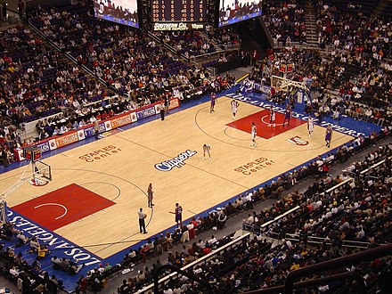

В 1891 году в Соединенных Штатах Америки молодой преподаватель, уроженец Канады,доктор Джеймс Нейсмит, пытаясь “оживить” уроки по гимнастики, прикрепил две корзины из-под фруктов к перилам балкона и предложил забрасывать туда футбольные мячи. Получившаяся игра лишь отдаленно напоминала современный баскетбол. Ни о каком ведении даже речи не шло, игроки перекидывали мяч друг другу и затем пытались закинуть его в корзину. Побеждала команда, забросившая большее количество мячей.Через год Нейсмит разработал первые правила игры в баскетбол. Первые же матчи по этим правилам вызвали и первые их изменения.
Постепенно баскетбол из США проник сначала на Восток – Японию, Китай, Филиппины, а потом в Европу и Южную Америку. Через 10 лет на Олимпийских играх в Сент-Луисе американцы организовали показательный тур между командами нескольких городов. В 1946 году возникла Баскетбольная ассоциация Америки (БAA). Первый матч под её эгидой состоялся 1 ноября того же года в Торонто между командами Toronto Huskies и New York Knickerbockers. В 1949 году, ассоциация объединилась с Национальной баскетбольной лигой США, в результате чего была образована Национальная баскетбольная ассоциация (NBA). В 1967 году, была создана Американская баскетбольная ассоциация, которая долгое время пыталась составить конкуренцию NBA, но спустя 9 лет объединилась с ней. На сегодняшний день NBA является одной из наиболее влиятельных и известных профессиональных баскетбольных лиг в мире.
В 1932 году основана Международная федерация любительского баскетбола. В состав федерации вошли 8 стран: Аргентина, Греция, Италия, Латвия, Португалия, Румыния. Швеция, Чехословакия. Исходя из названия, предполагалось, что организация будет возглавлять только любительский баскетбол, однако, в 1989 году, профессиональные баскетболисты получили допуск к международным соревнованиям, и слово «любительский» было изъято из наименования. Самый первый международный матч состоялся в 1904 году, а в 1936 году баскетбол попал в программу летних Олимпийских игр.
| Характеристики мяча | |||
| Размер баскетбольного мяча | Длина окружности | Масса, г | |
| см | мм | ||
| Размер 7 | 7,5-7,8 | 750-780 | 567-650 |
| Размер 6 | 7,2-7,4 | 720-740 | 500-540 |
| Размер 5 | 6,9-7,1 | 690-710 | 470-500 |
| Размер 3 | 5,6-5,8 | 560-580 | 300-330 |

Игровое поле для баскетбола имеет прямоугольную форму и твердое покрытие. Покрытие площадки не должно иметь никаких изгибов, трещин или любых других деформаций. Размер площадки для баскетбола должен составлять 28 метров в длину и 15 метров в ширину (стандарт). Высота потолка должна быть не меньше 7 метров, а на профессиональных площадках потолки поднимают на высоту 12 метров и выше. Свет на поле должен быть сделан так, чтобы не мешать передвижению игроков и должен равномерно охватывать всю площадку.
До конца 60-х годов турниры можно было организовывать под открытым небом. Однако сейчас баскетбольные матчи проводятся только на закрытых площадках.
Высота баскетбольного кольца от уровня пола составляет 3,05 метра (стандарт). Диаметр кольца для баскетбола колеблется от 45 см до 45,7 см. Само кольцо должно быть выкрашено в ярко оранжевый цвет. К кольцу крепится специальная сетка диной 40-45 см. Баскетбольное кольцо расположено на расстоянии 15 см от щита.
Щит, к которому крепится кольцо, также имеет ряд важных параметров. Размер баскетбольного щита: ширина – 1,8 м, высота – 1,05 м. Современные баскетбольные щиты изготавливаются из закаленного стекла. Постепенно баскетбол из США проник сначала на Восток – Японию, Китай, Филиппины, а потом в Европу и Южную Америку. Через 10 лет на Олимпийских играх в Сент-Луисе американцы организовали показательный тур между командами нескольких городов. В 1946 году возникла Баскетбольная ассоциация Америки (БAA). Первый матч под её эгидой состоялся 1 ноября того же года в Торонто между командами Toronto Huskies и New York Knickerbockers. В 1949 году, ассоциация объединилась с Национальной баскетбольной лигой США, в результате чего была образована Национальная баскетбольная ассоциация (NBA). В 1967 году, была создана Американская баскетбольная ассоциация, которая долгое время пыталась составить конкуренцию NBA, но спустя 9 лет объединилась с ней. На сегодняшний день NBA является одной из наиболее влиятельных и известных профессиональных баскетбольных лиг в мире.
Известные баскетболисты